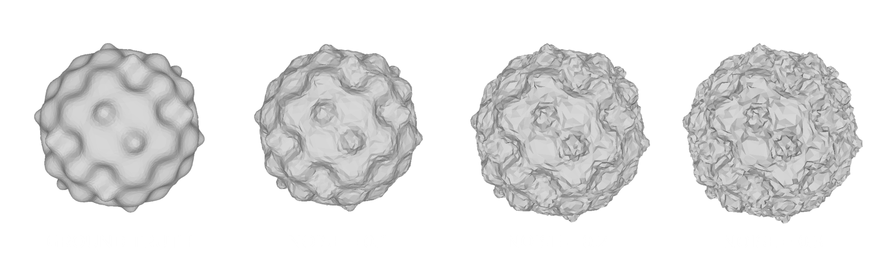
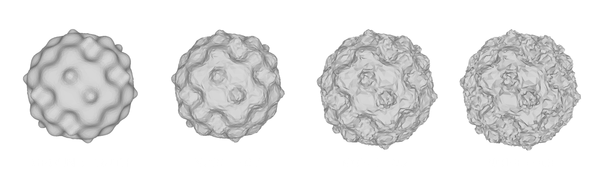

Studio e Applicazione di Graph Convolutional Network per il denoising di mesh 3D
Presentata da: Gabriele Fronzoni
Relatore: Prof. Damiana Lazzaro
Obiettivi
- Studio della struttura delle mesh e loro rappresentazione
- Studio delle Graph Convolutional Network e applicazione di queste per operazioni su mesh
- Studio approfondito della GCN-Denoiser per il denoising di mesh
- Implementazione della GCN-Denoiser (generazione dati, rete, allenamento) in Python
- Analisi e implementazione di modifiche migliorative della rete
MESH
Da cosa sono caratterizzate?

Vertici

Spigoli

Facce

Mesh trending_flat Grafo

Facce trending_flat Nodi
Spigoli trending_flat Archi
Graph Convolutional Network

- Input Layer
- Hidden Layers (Grah convolutional layers, Activaction functions, Pooling Layers)
- Output Layer
- Fully Connected Layers
 \[ H^{(l+1)}= \sigma(\tilde{A}H^{(l)}W^{(l)})\]
\[ H^{(l+1)}= \sigma(\tilde{A}H^{(l)}W^{(l)})\]
GCN-Denoiser

- Generazione di patch locali per ogni faccia

- Costruzione del grafo per ogni patch

- Utilizzo dei dati di input per predizione delle normali
- Aggiornamento dei vertici usando le normali predette
Selezione delle patch
...ma come vengono scelte le facce?
Per ogni faccia che appartiene alla patch, si indicano:
- Centroide della faccia
- Normale alla faccia
- Area della faccia
- Numero dei vicini della faccia
- Vertici della faccia
Tutti gli attributi vengono normalizzati
Architettura della rete
La convoluzione non è solo statica...
... ma anche dinamica
Il grafo viene ricostruito in maniera dinamica usando l'algoritmo K-nearest-neighbors (KNN) \[ \mathcal{N}_k(f_i) = \underset{S \subset \mathcal{F}, |S|=k}{\text{argmin}} \sum_{f_j \in S} d(f_i, f_j) \]
Training
 

Denoising
Prevede due fasi:
1. Raffinamento delle normali
Perché? trending_flat regolarizzare le normali e evitare discontinuità locali
Denoising
2. Aggiornamento dei vertici
Modifiche alla rete
Si introducono due nuove features
$\alpha^n$: angolo di intensità del rumore
\[ \alpha^n = \text{acos}(n_i \cdot n_i^M)\]Perche? trending_flat La rete originale non era in grado di ricostruire una superficie se coperta da rumore ad alta intensità
Modifiche alla rete
$\alpha^g$: angolo delle carattaristiche geometriche
\[ \alpha^g_i = \max_{f_j \in \mathbb{P}^2_i}\,\max_{f_l \in \mathbb{P}^2_i}\, \text{acos}(n_j^M \cdot n_l^M).\]Perche? trending_flat La rete originale assume che la natura del rumore e delle caratteristiche geometriche sia diversa
Testing e risultati ottenuti
- Per entrambi i modelli, si è considerata la versione migliore ottenuta dopo 25 epoche di training;
- I modelli sono stati testati su tre mesh, per ognuna delle quali si è generata una versione con rumore da 0.1 a 0.5;
- Per la rete con le modifiche è stato effettuato uno studio per l'ottimizzazione degli iperparametri;
- Come misure di errore sono stati utilizzati l'errore medio delle normali ($E_a$) e la distanza di Hausdorff media normalizzata ($E_v$)


Grazie per l'attenzione